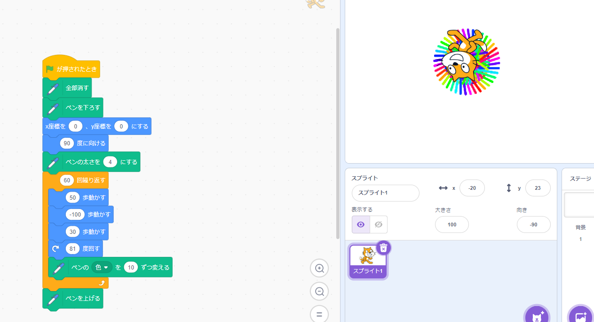
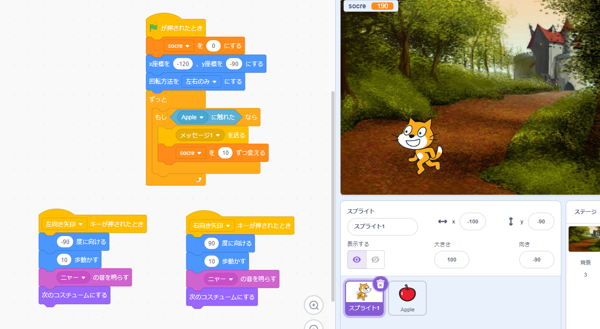

1週目のレポート ： 公大高専１年実習I-1
3b班24番 西畑太一
第1週目
1-1 サイエンスアート

1.内容
スクラッチを使ってスプライトが動き、ランダムで線を書くプログラムを作った。また、線は時間とともに少しずつ色が変わっていく。直線だけだが丸み帯びているアートができた。
2.感想
普通の絵と違って何回でも、できている過程を見れるのが面白いなと思った。また、角度や歩数などを変えるだけで簡単に変わっていき面白いなと思った。
1-2 ゲーム

1.内容
リンゴをキャッチするたびに点数が加算されるゲームを作った。１から４秒のランダムで落ちるようなプログラムになった。
2.感想
今回はジャンプすることができないが、スペースキーを押したときy座標を上げて少し経ったらy座標を下げるようにすればジャンプを入れれると思った。
1-3 ホームページ作成
私のホームページ
1.内容
githubで実習の感想や自己紹介が書いてあるホームページを作成した。
2.感想
文字と画像が少しづつあるだけホームページなのに思っていたよりコードが長くてゲームの攻略サイトみたいなホームページはもっと長いんだなとおもい驚いた。
各ページへのリンク
1週目のレポート
2週目のレポート
3週目のレポート
私のホームページ